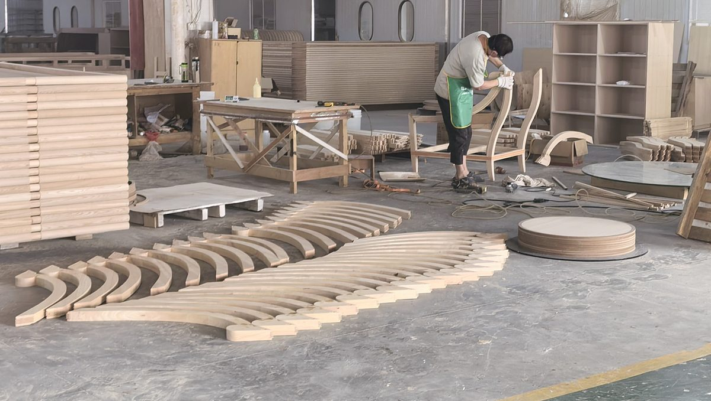
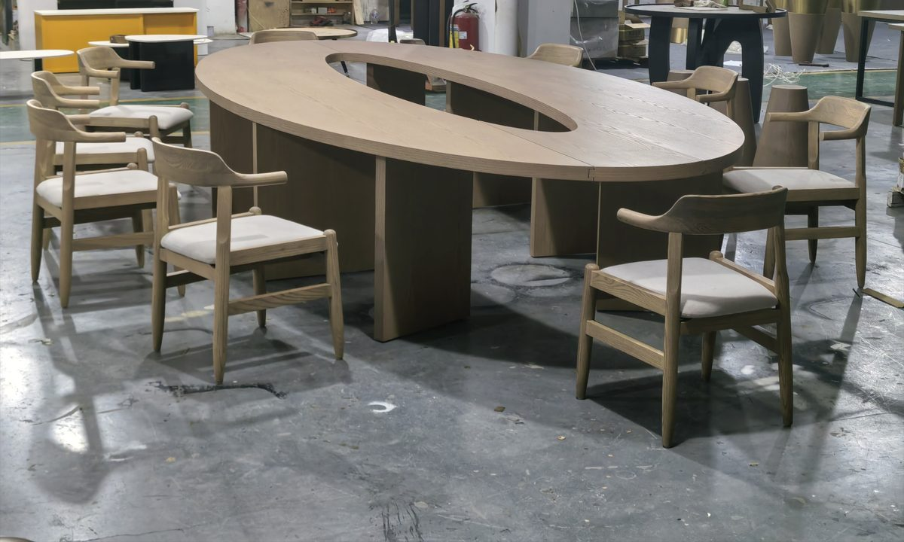

What does the current range look like?
Eight pieces from the seating programme, chosen to show the four construction types rather than the colour card: a fixed bay, a modular bay, a solid-timber stool and a bent frame.

Frame
Steam-bent beech rails
Rails racked after bending, before assembly. A bent rail holds its curve; a cut one springs back within a season.

Fixed booth
Timber lattice booth screens
Fixed bays with a lattice screen between covers, stone-top tables on a centre pedestal.

Banquette
Sage green banquette bays
Four-cover bays with a channel back. The run is set out on pitch, not on the wall length.

Modular
Modular bay on a timber plinth
Bays bolt together on site. The plinth takes the fixing and hides the cable route to the table lamps.

Communal
Oval communal table, twelve covers
One top, twelve covers, no fixed seats — the layout stays flexible through the service day.

Counter stool
Velvet counter stool, brass frame
Seat height taken from the actual counter, footrest set off that counter rather than off a nominal figure.

Stool
Curved-back timber counter stool
Solid timber, no upholstery at the bar — nothing to split where the most spills land.

Lobby bar
Lobby bar banquette
A 1,100 mm back on a public-area run, high enough to hold the acoustic separation the room was designed around.